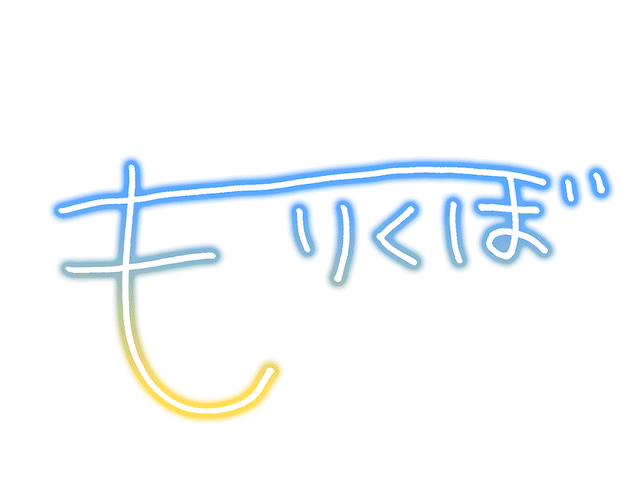

모리쿠보 노노
- 개요
- 아이돌 마스터 신데렐라 걸즈에 등장하는 아이돌하기 싫어하는 네거티브 소녀 아이돌.
- 프로필
- 동영상 소개
- 캐릭터 소개
-
무슨 말을 하든지 항상 끝에 '~인데요(ですけど)...' 라면서 아이돌 하기 싫어하는 아이돌. 그리고 존댓말 캐릭터다.
소극적이고 부정적인 영향으로 말하는 것이 서투르며 후타바 안즈 이상으로 아이돌 일을 하기 싫어한다. 안즈와의 차이점은 안즈가 일을 안 하려 드는 건 게으름 때문이고 모든 일을 거절하는 반면, 노노는 애초에 아이돌이 되고 싶지도 않았고 할 의지도 없어서 '아이돌 일' 자체를 하기 싫어한다는 점. 즉 아이돌 외에 다른 것도 다 하기 싫어서 농땡이를 부리는 안즈랑은 다르다. 이때문에 특훈 전, 후 반응도 아이돌 일을 하기 싫어하는 캐릭터 치고는 극과 극인데, 안즈는 빨리 일을 끝내고 싶은 마음에 한번에 오케이 받을만한 실력을 발휘한뒤 도망치려다가 연행당하는 패턴(...)이 많지만, 노노는 아예 원망가득한 표정으로 프로듀서에게 항의하거나 아예 생각하는 것을 그만두었다 상태가 돼버린다. 일단 안즈는 일을 싫어한다곤 해도 인세를 받기 위해 엄연히 자의로 일을 시작한 반면 노노는 순전히 원치 않게 시작한 한 일이다보니 이런 차이가 생기는 듯 하다. 본인은 계속해서 그만두고 싶어하지만, 주위에서 달래고 설득해서 마지못해 활동 한 뒤 또 그만두고 싶어하고 또 달래고 설득하고 하는, 노노 본인 입장에서는 스파이럴에 빠져 있다.
대부분의 카드 특훈 전의 표정 역시 누가 봐도 억지로 하고 있는 표정. 아이돌을 시작한 계기도 친척의 '한 번만' 이라는 말에 속아 넘어갔다는 모양.[2] 데레스테에서 내막이 드러났는데, 커뮤에 따르면 숙부가 급하게 대역으로 데려왔다가 이 참에 아이돌로 눌러앉힌 걸로 나온다. 게다가 원래 하고싶던 일은 동화작가였다고. 그래서 관련 카드들이 동화에 관련된 것들이 상당히 많다. 그 덕택인지 건너편의 키타자와 시호와 얽히는 부분도 조금은 있다. 둘 다 그림책을 좋아한다는 공통점이 있는데. 이 둘은 14살 동갑내기다.
대사 중에는 '아이돌이라든가 무-리이-(むーりぃー)', '아우우, 돌아가고 싶은데요', '조용히 살고 싶은데요' 등등의 안즈 뺨치는 멘트들이 많다. 특훈 후에도 이런 점은 그다지 개선된 것 같지 않고, SR 친애도 MAX 대사가 책상 밑에 숨은 자길 찾아냈다고 프로듀서를 귀축에 악마라고 욕하는 거다. "이렇게나 눈물로 호소해도 안 되나요…. ○○ 프로듀서 씨는 귀축이에요. 오니, 악마…. 이제 난 못 도망치는 거야…"라니 말 다했다. 안즈도 이 정도로 막나가지는 않았다. 아이돌다운(?) 복장을 싫어하는 것도 여전해서 평범한 옷으로 빨리 갈아입고 싶어한다. 하도 입에 "무리~"를 달고 살아서 별명도 무리쿠보. 입버릇에서 아예 노노를 상징하는 대사로 자리잡았다. 한편 최근 들어서는 성우 배정과 함께 데레스테의 영향으로 노노가 등장하는 장면이 많이 나오는데, ○○쿠보 즉 의태어+くぼ를 붙여 본인의 상태나 감정을 나타내는 표현이 자주 보이고 있다. [3]
드림라이브 후반전 마지막 라운드에서 오오니시 유리코, 스기사카 우미와 함께 유닛으로 등장한다. 유닛 명은 "메르헨&고딕". 라이브는 둘에게 맡기고 자기는 도망가겠다는 등, 아이돌 하기 싫어서 도망치는 것은 여전하다.
이후 나오는 카드들 이미지를 봐도 계속해서 책상밑에서 사는 모양. 원래부터 있던 쇼코에다 마마유까지 끼어들어서, 기어이 언더 더 데스크라는 유닛을 결성하고 말았다.
아이돌 프로듀스 2주년 기념편을 보면 그래도 호시 쇼코와 하야사카 미레이하고는 그럭저럭 친한 모양. 심지어 쇼코는 그녀를 위해 버섯 파스타를 주려고 한다! 더불어 공식 코믹 앙상블에서는 칸자키 란코의 중2병스런 글을 보고 멋진 시라고 생각한다.
데레스테에도 추가되었는데 로딩 중에 나오는 1컷의 제목은 '노노를 찾아라!'. 3D로 보면 춤은 열심히 추면서도 카메라 앵글에 절대로 눈을 마주치지 않는다. 구현 잘 해놨다(....) 초기에는 다른 아이돌들이 카메라쪽으로 시선을 처리할 때 그와 반대로 움직이게만 해놓아서, 원래는 눈을 피해야 하는 시퀀스[4]에서는 정열적으로 시선을 던지는 모리쿠보를 볼 수도 있었다. 나중에 추가 패치로 의도치 않은 눈 맞음은 이제 마주치지 않거나 아예 눈을 감아버리게 수정되었다. 철저한 놈들... 예외적으로 S(mile)ING!에서는 마지막 정면샷에서 카메라 시선처리를 한다#. 프로듀서 노트의 3D뷰에서도 플레이어쪽을 쳐다보는 다른 아이돌들과는 달리 아무리 돌려봐도 계속 시선을 피한다. 2.3.0 업데이트 때에 시선이 따라가는 버그가 발생되었던 적이 있었다. # 다만 2016년 11월 22일에 출시된 SS레어의 모델링은 눈을 피하지 않는데, 이는 프로듀서가 노노가 원하는 대로 의상과 무대를 준비해줘서 의욕을 보인다는 설정 때문이다. 사실 서편제라 카더라.#
이런 면 덕분에 숨은 프로듀서들이 은근 많다. 네거티브한 성격이긴 하지만 그렇다고 비호감은 아니고 개성도 있는 편이라 2차창작이나 공식에서의 활용도도 높아서 무성우 시절에도 no보이스 아이돌중에선 상위권의 인기를 누렸다. 그래서 성우 배정에 대한 기대감이 높았다.
5회 총선거에서 최상위를 차지하게 되어 성우가 붙는 것은 물론이요 최종순위 top 5가 모여 만드는 라디오 방송까지 참여하게 되면서, 노노의 "무-리"를 들을 수 있게 되었다! 덕분에 노노P들은 광희난무 중. 참고로 4위 기념 코멘트에선 아예 정신줄을 놓아버린 건지 '될 대로 되라'라고 푸념한다.
2016년 7월 8일부터 1위부터 5위까지 매주 총선 순위순으로 라디오를 진행하였고 노노의 순서인 2016년 7월 29일에 드디어 성우가 타카하시 카린으로 밝혀졌다.
처음 목소리가 공개된 라디오에선 아니나 다를까 책상 밑에 숨어있었고, 게스트인 보모시부야 린의 도움을 받아 진행되었다.[5] 대체로 노노의 네거티브함을 잘 살린 연기라고 평가받고 있으나, 목소리가 듣는 사람에 따라선 호불호가 갈리기도 하는 듯. 재미있는 건 호평과 혹평 모두 연기가 찌질한 것은 기본으로 깔고(...) 그 방향성이 좋다/싫다는 이유를 기반으로 삼고 있다는 점.[6]
마침내 노노의 데뷔곡이 되는 노래 두 곡이 발표되었는데, 노노의 캐릭터성을 부인이라도 한 듯 정말 뛰어난 가창력을 선보였다! 이 가창력은 인디비쥬얼즈의 유닛곡인 ∀NSWER에서 다시 한번 증명되었는데, 노노의 평소 성격을 알든 모르든 들으면 '이걸 정말 노노가 불렀어?' 할 정도. 그래서 억지로라도 아이돌 시킨 거다.(...)
또 ∀NSWER의 이벤트 커뮤에서 노노의 말버릇인 '~인데요(けど)...'의 비밀이 밝혀지는데, 사실 노노는 더 하고 싶은 말이 있지만 자신감이 없어 말하진 못하고 ~~인데요로 끝내 버리곤 했던 것이다. 커뮤에서의 사례로 예를 들자면, "눈을 마주보는 건 서투른데요..."라고 말하지만 실제론 "그렇지만 마주보고 싶어요"라는 마음을 담고 있었다.[7] 전하고 싶은 말이 있어도 전하지 못하는 노노에게 미레이가 스스로를 믿지 못해도 서로를 믿고 의지하자며 설득하고 덕분에 용기를 내게 된다. 미레이의 카드에서 평소와는 다른 모습을 보이는 것도 이 때문.
즉 데레스테를 통해서 지나치게 네거티브한 성격은 아니었다는 것이 밝혀진 셈. 표현만 제대로 하면 정말로 좋은 아이.
그밖에 극단적으로 수동적인 성격이라 분위기에 잘 휩쓸린다. 본인 개인 커뮤 내용은 노예 계약의 현장을 볼 수 있고 작은 사랑의 밀실사건에선 폐교체험에 휩쓸려서 끝에 가서 울먹거리기도 하고 Sweet Witches' Night 〜6人目はだぁれ〜에선 일하기 싫어하는데 멤버들이 과자 좋아하냐고 묻자 좋아한다고 하다 분위기에 휩쓸리면서 일하게 되고 ∀NSWER에서는 책상 밑에서 도넛에 휩쓸리는 체험을 했다며 쇼코와 안부 이야기를 하다 유닛 활동을 하고 싶어하는 하야사카 미레이가 책상밑에서 끄집어내면서 유닛 활동을 시작하게 되고 오오츠키 유이의 Radio Happy에선 공연을 마친 유이와 마주치고 같이 놀자는 유이의 말에 수줍어하며 유이와 동행하게 되는데 유키의 집에 가서 홈런볼의 신선함을 간직하기 위해 야구공을 냉장고에 넣어 보관하는 사실에 의문을 품기도 하고 유이&리나와 가라오케에 가서 둘이 노노가 부를 노래라며 독버섯 전설을 선곡하자 "무리!"라며 절규하는등 은근 고통받는 모습을 볼 수 있다. (...)
마이클 잭슨의 Beat It으로 Mad를 만들었다. 森久保at It 자막 무리 It이 더 어울릴 것 같은데...
갸루 모리쿠보 노노, 헤어스타일이 노노에 어울려서 '갸루쿠보'라는 이름으로 유행하고 있는 중이다. 주로 오오츠키 유이하고 엮이면서 짤들이 많이 나온다. 하지만 간혹 노노의 캐릭터성을 무시하고 엄하게 다루는 짤들도 서서히 나타나면서 몇몇 노노P들은 그냥 모리쿠보가 아닌 그냥 갸루쿠보가 되었다며 불쾌감을 드러내는 중. "갸루"쿠보가 아니라 갸루"쿠보"가 진리이거늘
친구인 호시 쇼코가 입으로는 친구가 없다고 말해도 교우관계를 살펴보면 모임의 중심 급 교우관계를 지닌 것 처럼 노노도 아이돌을 하기 싫어하고 성격도 극히 소심해서 딱히 친구나 인맥이 없어보이지만 살펴보면 최상위권의 인맥을 자랑한다. 기만 그 자체 당장 신데걸로만 봐도 초대 신데걸 아이리와 유닛 곡, 2대 신대걸 란코와 작품교류, 3대 신대걸 시부야 린과 라디오 및 さよならアンドロメダ라는 곡에서 동반출현, 5대 신데걸 우즈키와 동반하여 총선거 곡으로 데뷔, 6대 신대걸 카에데와 6주년 이벤트 참가 등 신데걸과의 출현이 많고, 참여한 유닛으로만 봐도 Sweet Witches' Night 〜6人目はだぁれ〜의 아이리, 시즈쿠, 카나코, 노리코 4명, ∀NSWER의 쇼코, 미레이 등 6명이나 있고, 이외에도 각종 보이스 CD 및 코믹스 출현등을 통하여 친분관계가 있다고 묘사된 아이돌들도 마유, 유이, 코우메, 사치코, 등등 한명한명이 전부 다 메이저 아이돌들이며 데레스테에서도 동갑내기인 히사카와 나기와도 영업 커뮤에서 미친듯한 츳코미를 보여주며 엮이더니 14평방에 수버니어 커뮤에서도 등장해 코즈에가 만든 나기 쿠키를 보고 "푸흡!"이라고 웃고 미안하다며 사과하는 모습을 보여주기도 했다. 이후 히사카와 하야테의 Packing Her Favorite 커뮤에선 로케에 갔다가 환상의 심해어에게 삼켜졌지만 나나미의 낚시기술이 빛을 발해 목숨을 구해졌다며 나기가 개드립을 치는데나기는 괜찮다고 했지만 의외로 그때 꽁했던게 있었던걸지도 나기뿐만 아니라 다른 동갑내기인 나나미와도 엮인듯 하다. 데레포에 따르면 무카이 타쿠미와 함께 고양이 카페에 간 적도 있는데[8] 사실 동갑내기 친구도 많고 그중에서 포엠 모임을 할 정도로 바깥 활동도 활발하며 연상도 인상이 험악한 것과 관계없이 누구랑도 놀러다니는걸 보면 인싸쿠보라 불러도 무방하다.
이제 분위기에 따라 ~~쿠보가 붙이는 것이 공식에서 받아들였는지 신작 극장에서도 셀럽에 충실한 동료들을 보고 저도...셀레쿠보가 되어야하는데요~라면서 말하는 신이 나온다. [9]
2018년 12월 1일 나고야 돔 라이브에서 사토 신, 시라기쿠 호타루와 함께 cm 12탄 멤버로 발탁되었다.
호타루의 더욱 더 노려라! 신데렐라 No.1에서 선행 출연했는데, 노노답게 라디오 부스 책상 밑에 숨어있었다.... 호타루는 자신의 불행 속성 때문에 노노가 못 온 것 아니냐고 우울해했지만....그 와중에도 호타루의 찻잔을 엎지르지 않았나....[10] 결국 호타루, 히로미와께 셋이서 원스텝스라는 유닛이 결성되어 ステップ＆スキップ 곡이 생겼다. 유닛이 결성되기 이전에도 히로미와 함께 데레스테 3주년 기념으로 あいくるしい을 리믹스 및 커버했다.
동갑내기를 부르는 호칭이 제각각인데, 데레스테를 기준으로 아스카에게는 편하게 아스카쨩이라고 부르지만 미레이와 히로미, 사치코, 나기에게는 "さん"(씨)을 붙여 부른다. 아직 다른 14살 동갑내기[11] 는 어떻게 부르는지는 불명.
노노의 노래가 많아지기 시작할 때부터, 출시하는 카드의 노노의 표정이 점점 밝아지는 것을 볼 수 있다. 그 전까지는 대놓고 싫다가 내비쳤지만, 이젠 불편한 모습이 거의 사라졌다. 당장에 첫 출시 카드와 신데렐라 드림 카드를 비교해보면 답이 나온다.
취미에도 나와있는 포엠 짓기, 즉 시 짓기는 정말로 뛰어난 것이 맞는 듯 한데, 니나가 프로듀서와 함께 마츠리에 갔을 때 라무네를 보고 느낀 점을 시로 지어서 보여줬을 때,해당 에피소드 살며시 미소지으며, 니나는, 시 짓는 능력이 있을지도 모르겠네요라며 칭찬해줬으며 데레스테에 따르면 같은 동갑내기인 히로미, 란코와도 포엠 모임을 갖고 있다. 나기도 조만간 합류할듯하다.
 저기… 모… 모리쿠보인데요… 아, 네, 모리쿠보 노노인데요, 저기, 프로듀서님, 갑자기 죄송하지만, 저기, 저, 이제 아이돌 같은 거 그만두려고 생각하는데요, 저기, 그러니까… ( 레어 ･ 모리쿠보 노노 프로필 코멘트 ) |
 |
もりくぼ のの 森久保 乃々 NONO MORIKUBO |
||
| 신장 | 149cm | 연령 | 14세 | |
|---|---|---|---|---|
| 체중 | 38kg | 생일 | 8월 27일 | |
| 혈액형 | AB형 | 잘 쓰는 손 | 왼손 | |
| 별자리 | 처녀자리 | 출신지 | 카나가와 현 | |
| 취미 | 포엠 짓기, 순정만화 모으기 | |||
| 성우 | 타카하시 카린 | |||
|  | ||||